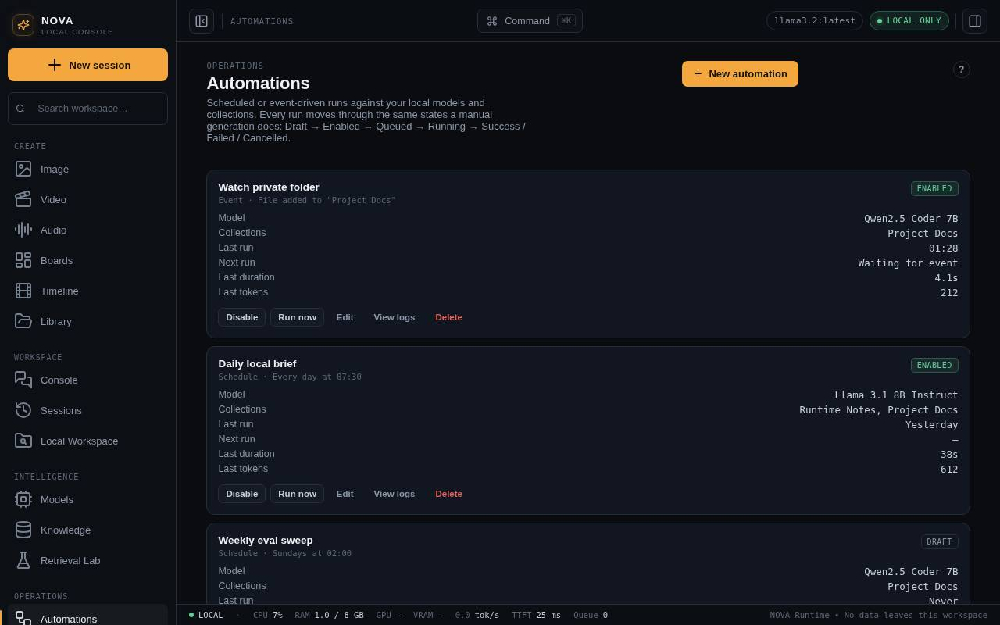
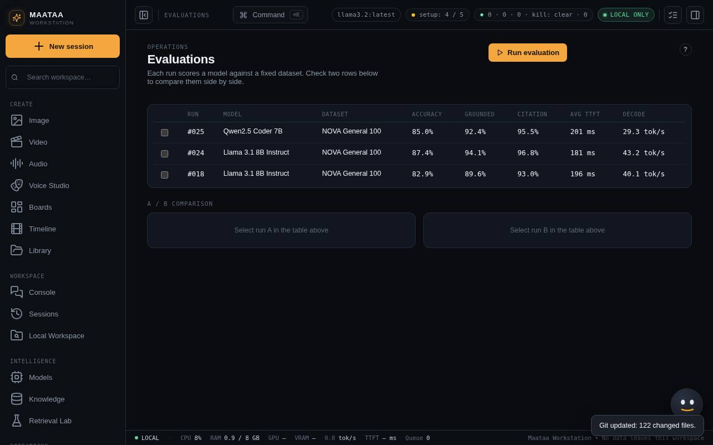

Automations and Evaluations
Run prompts, skills or workflows on a schedule, and compare models on a fixed benchmark.
Automations
An automation runs a prompt, skill or workflow on a schedule (every N minutes, daily, weekly), when a document is added to a collection, or on demand.
- Create an automation. It starts as Draft.
- Set its prompt or target, trigger, model and knowledge collections.
- Press Run now to test it, and read the output in its run history.
- Enable it once the test does what you want.

An enabled automation that was due while Maataa was closed runs after Maataa starts. Return it to Draft before changing its model, prompt or collections. Failed and cancelled runs stay in its history.
Evaluations
Evaluations compares models on Maataa's fixed benchmark datasets: accuracy, latency and throughput side by side. Sync the models first, and compare runs that used the same dataset and comparable settings. A score describes that benchmark, not a model's general accuracy or safety.
